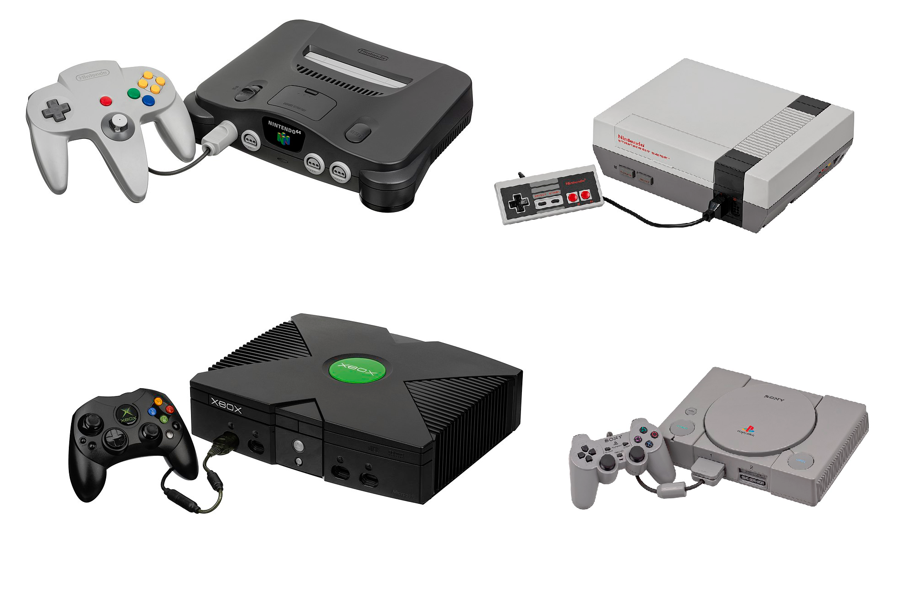
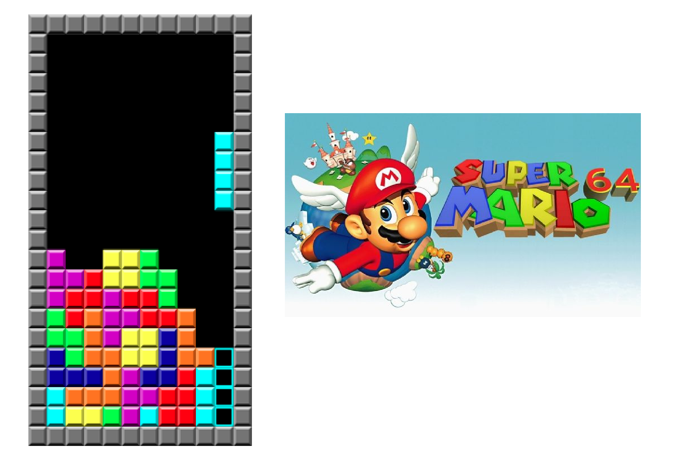

På denna sidan kommer du att kunna läsa om gamla spelkonsoler och gamla spel.
Spelkonsoler
Dessa spelkonsolerna är några av de kändaste spelkonsoler genom tiderna.
Nintendo 64
Nintendo 64 släpptes 1996 och var döpt efter sin 64-bitars processor.
NES
Nintendo Entertainment System släpptes 1983 och hade en 8-bitars processor.
Xbox
Microsoft släppte Xbox 2001. Xboxen var Microsofts första försök med att göra en spelkonsol. Xboxen slutade säljas 2009.
Playstation
Sony släppte Playstationen 1994 och sålde den tills år 2000.
Gamla spel
Super Mario 64
Super Mario 64 släpptes av Nintendo 1996. Super Mario 64 var det första spelet i Super Mario-serien att ha 3d-grafik. Super Mario 64 hade 2003 sålt hela 11,62 miljoner exemplar.
Tetris
Tetris släpptes 1984 i Sovjetunionen och är med i Guinness World Records för att vara det mest porterade spelet någonsin.
För fortsatt läsning om spelkonsoler och spel kan du trycka på någon av följade länkar:
Wikipedia-sidan om Nintendo 64Wikipedia-sidan om Nintendo Entertainment System
Wikipedia-sidan om Xbox
Wikipedia-sidan om Playstation
Wikipedia-sidan om Super Mario 64
Wikipedia-sidan om Tetris